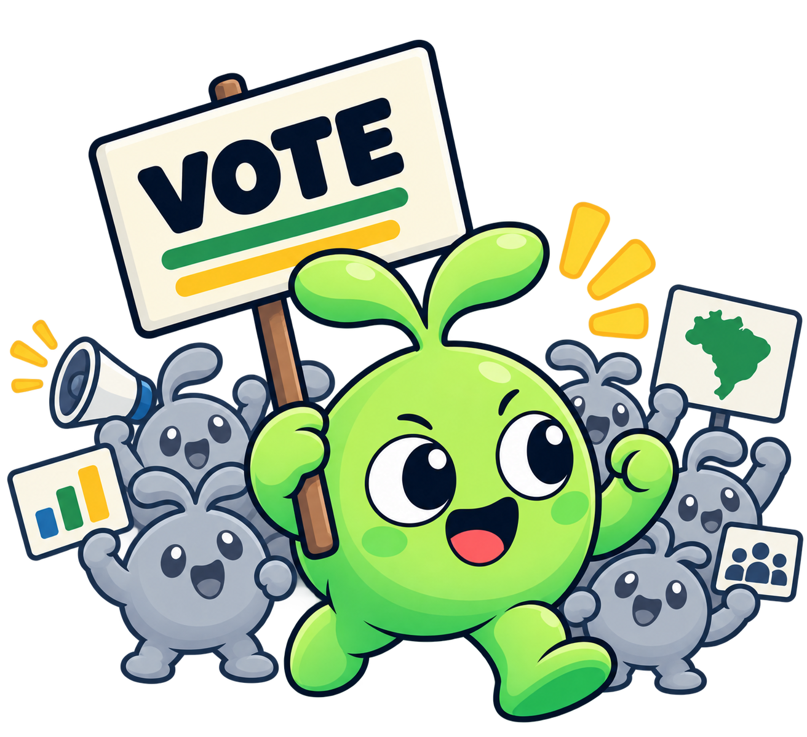
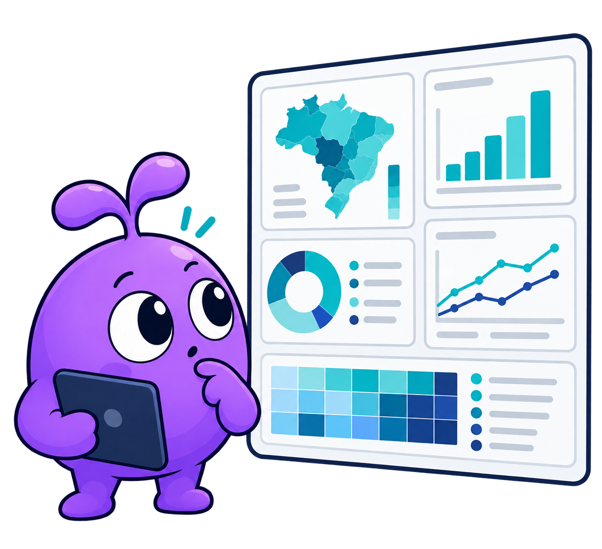

Análise eleitoral com personalidade
Leituras eleitorais claras, sem enfeite nem achismo.
A Outliers Analytics organiza dados públicos, compara contextos e transforma a base em análise que dá para ler rápido — sem perder o cuidado estatístico.
- Base pública
- Fontes abertas, organizadas e prontas para conferência.
- Comparação útil
- Território, tempo e participação entram na mesma leitura.
- Visual limpo
- Gráficos e painéis feitos para explicar, não distrair.
Radar eleitoral
Exemplo
Descrição
“Outlier” é o ponto fora da curva. Em eleição, muitas vezes é onde a história começa.
A Outliers procura esse tipo de sinal: movimentos locais, diferenças persistentes e mudanças que passam batido quando todo mundo olha só para o agregado.
O que fazemos com isso
- Limpamos e organizamos a base antes de interpretar qualquer número.
- Comparamos resultado, participação e território no mesmo contexto.
- Mostramos o que importa sem inflar conclusão.
Serviços
Três frentes de trabalho, sem rodeio.
Produto, código e análise — cada uma resolve uma parte diferente do problema.

Plataforma eleitoral
Dashboards para acompanhar resultado, abstenção e comparação territorial.
- Leitura por município, zona ou seção
- Indicadores fáceis de cruzar
- Visual pronto para uso público ou interno
Pacotes Python
Ferramentas para coletar, tratar e reaproveitar dados públicos com menos atrito.
- Rotinas de ETL reutilizáveis
- Integração com fontes brasileiras
- Fluxo pensado para análise de verdade

Análise de dados
Estudos eleitorais com foco em padrão, contexto e interpretação cuidadosa.
- Séries históricas e recortes locais
- Detecção de comportamento fora da curva
- Relatórios diretos, sem jargão vazio
Método
Rigor estatístico, do começo ao fim.
O trabalho fica mais confiável quando a base está limpa, a comparação é justa e o gráfico não tenta parecer mais certeiro do que é.
Projetos
Ferramentas abertas que já colocam essa abordagem em prática.
Dois exemplos de coisas úteis que saíram desse jeito de trabalhar.
DadosAbertosBrasil
Acesso mais simples a dados públicos e APIs do governo.
Pacote Python para buscar e organizar bases brasileiras sem repetir trabalho básico a cada projeto.
cellmate
Planilhas melhores sem perder tempo em formatação manual.
Biblioteca Python para gerar arquivos Excel mais legíveis com OpenPyXL.
Contato
Se fizer sentido para o seu projeto, vamos conversar.
Colaboração, dúvidas sobre dados eleitorais ou interesse nos pacotes — o caminho mais simples é mandar uma mensagem.